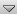

Komma igång med hjälpläget
Panelen längst upp till vänster på sidan kallas för kontrollpanelen för hjälpläge. Vanligtvis använder du den här panelen för att öppna innehållsförteckningen eller komma igång-handböckerna i PDF-format. Om du vill minimera kontrollpanelen för hjälpläge klickar du på ikonen  överst på kontrollpanelen. Klicka på den här ikonen igen när du vill visa panelen i normal storlek på nytt.
I hjälpläget beskrivs den aktiva sidan. Klicka på en  om du vill visa en hjälppanel i Kablink Teaming med information om motsvarande område på sidan. Om du vill stänga hjälppanelen klickar du på ikonen (X) längst upp till höger på hjälppanelen. Alternativt klickar du på en annan och fortsätter läsa. I stället för att använda informationsikoner kan du klicka på på kontrollpanelen för hjälpläge och klicka på de länkrubriker du är intresserad av.
om du vill visa en hjälppanel i Kablink Teaming med information om motsvarande område på sidan. Om du vill stänga hjälppanelen klickar du på ikonen (X) längst upp till höger på hjälppanelen. Alternativt klickar du på en annan och fortsätter läsa. I stället för att använda informationsikoner kan du klicka på på kontrollpanelen för hjälpläge och klicka på de länkrubriker du är intresserad av.
Om du vill visa mer detaljerad Teaming-dokumentation klickar du på på kontrollpanelen för hjälpläge.
När du vill stänga hjälpläget klickar du på ikonen (X) längst upp till höger på kontrollpanelen. Du kan också klicka någonstans i den nedtonade delen på sidan.
När du har stängt hjälpläget och börjar använda programverktygen visas i formulär som behöver ytterligare förklaring. Klicka på bredvid ett formulärområde om du vill visa mer information om området.